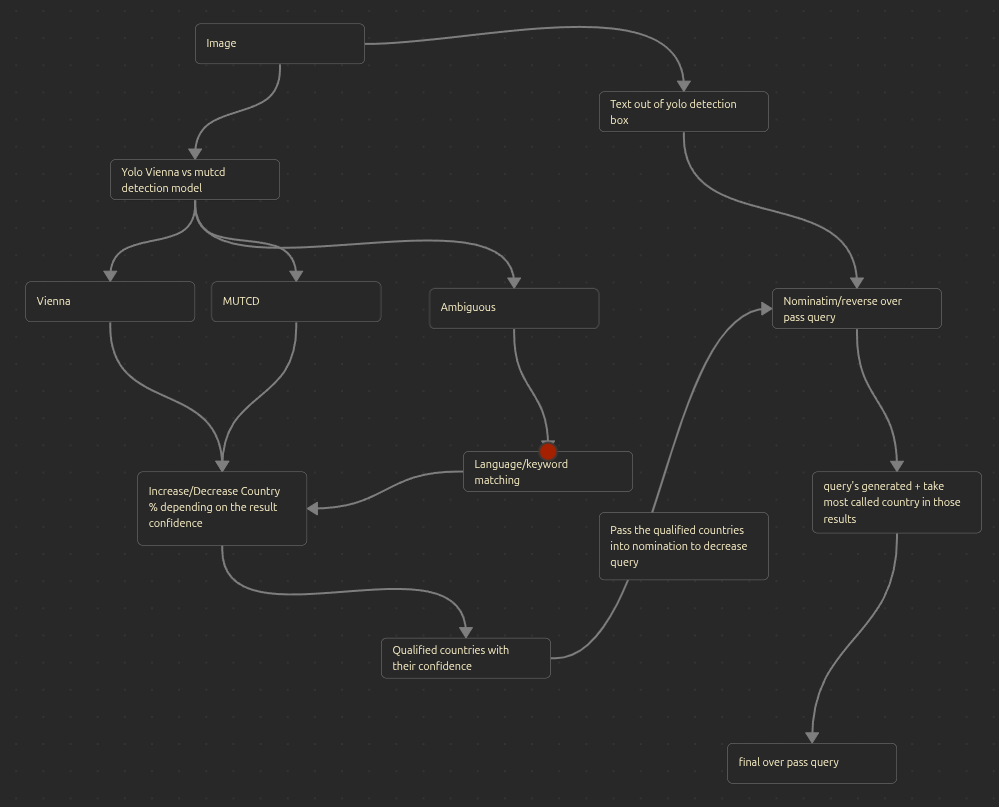

GeoGuessr Assistant
GeoGuessr Assistant is a computer vision system that analyzes Google Street View images and predicts geographic locations. The system achieves 74.8% accuracy at the city level by analyzing road signs, text, and other visual elements through machine learning.
Contents
Overview
This project was developed as a final-year computer science dissertation (3rd year Licence). The system represents an attempt to solve the geolocation problem—determining where a photograph was taken based purely on visual information—through intelligent analysis of road signage and textual elements within Street View images.
Rather than making direct predictions, the system employs a novel approach based on elimination logic, progressively narrowing the search space by identifying regional and national characteristics visible in the imagery.
Key Capabilities
- Road Sign Detection: Fine-tuned YOLOv8m model with three classification categories (MUTCD, Vienna Convention, Ambiguous)
- Optical Character Recognition: EasyOCR with integrated language detection
- Probabilistic Reasoning: Custom elimination and probability logic
- Geographic Integration: OpenStreetMap integration via Overpass and Nominatim APIs
- Local Execution: Runs entirely offline without cloud dependencies
- Performance: Fast inference suitable for real-time predictions
Methodology
Detection Pipeline
The system processes Street View images through the following pipeline:
- Image acquisition and preprocessing
- Road sign detection using fine-tuned YOLOv8m
- Text extraction via EasyOCR with language identification
- Geographic reasoning through elimination
- OpenStreetMap validation
- Location prediction with confidence scoring

Sign Classification
The YOLO model classifies detected signs into three categories to infer geographic region:
- MUTCD Signs: Indicates North American locations (United States, Canada)
- Vienna Convention Signs: Indicates European and international locations
- Ambiguous Signs: Requires additional contextual analysis
Architecture
Component Overview
| Component | Technology | Purpose |
|---|---|---|
| Object Detection | YOLOv8m (fine-tuned) | Road sign detection |
| Text Recognition | EasyOCR | Extract text from images |
| Language Detection | langdetect | Identify text language |
| Geographic Data | OpenStreetMap (Nominatim, Overpass) | Location validation and enrichment |
Getting Started
For detailed installation and usage instructions, see the project repository on GitHub.
Demo
The following video demonstrates the system in operation:
Future Development
Planned enhancements to the system include:
- Vegetation and climate zone detection
- Building architecture recognition and classification
- Vehicle model identification for temporal context
- Additional visual cues (utility poles, road markings, etc.)
- Improved web interface for accessibility
- Multi-image analysis for increased accuracy
See Also
- GeoGuessr – The original game
- YOLOv8 Documentation
- OpenStreetMap
- EasyOCR Repository